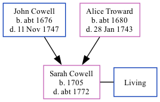

Sarah Fuller (née Cowell) 1705 - c1772
[ Home ] | [ Calendar ] | [ Surnames Index ] | [ Family History ]The child of John Cowell (a yeoman) and Alice Troward, Sarah Cowell, the six times great-aunt of <a href="I1.html">Nigel Horne</a>, was born in Margate, Kent, England in 1705. She married William Fuller at St Mary the Virgin Church, Minster, Thanet, Kent, England on Sep 26, 1727<span class="citation">1</span>.<p>She died <i>c.</i> 1772 and was buried at St Mary the Virgin Church on Feb 13, 1772<span class="citation">2</span>.
Parents
- John was born c. 1676
- Alice was born c. 1680
Citations
- Kent, East Kent marriage index 1538-1754 - Findmypast
- Kent, Canterbury Archdeaconry Burials - Findmypast
Media
Kent, East Kent marriage index 1538-1754 - GBPRS/EASTKENT/MAR/171893/2
Kent, Canterbury Archdeaconry marriages 1538-1928 - GBPRS/CANT/M/97161618/2
England Marriages 1538-1973 - R_848032664/2
Kent, Canterbury Archdeaconry burials 1538-1988 - GBPRS/CANT/D/95346986
Family Tree
Generated by Ged2Site. Last updated on Jul 20, 2025